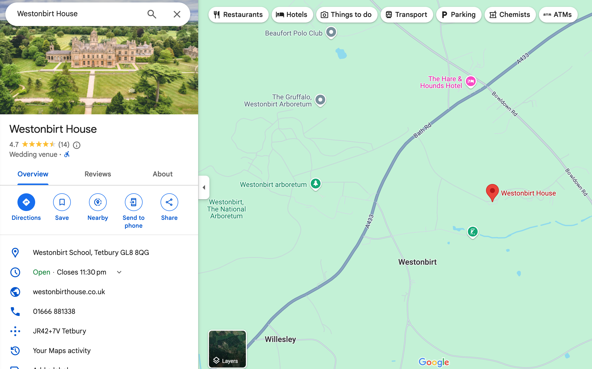

location
from london: take the m4 to junction 17, then its around a 20 minute drive: take the a429 until the first roundabout (where you can stop off for m4 go-karting on your way, although this may add to your journey time!). then, take the second exit at the next roundabout you encounter, and then follow the road to westonbirt village. finally, take the turning to the church and golf course, and the venue is just past the little cottages on your left! from elsewhere: please consult google maps